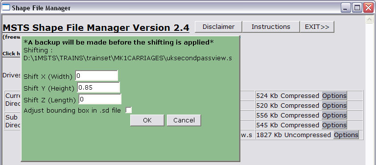
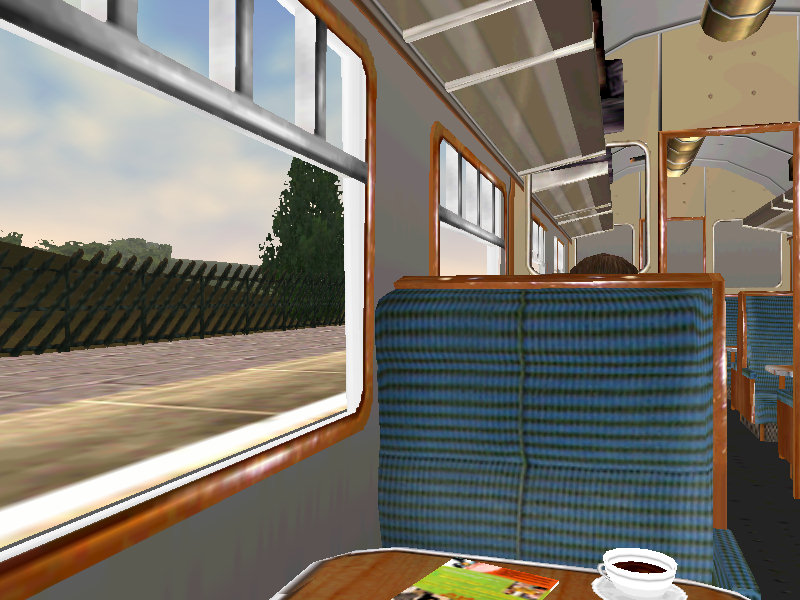

The Mk1Carriages were supplied with the MSTS v1.2/1.4 upgrade. The passenger view is quite nice, but there is an error in its positioning. I thought I'd present this one as an example of how you sometimes need to look deeper into a problem.
Let's look at the default Mk1Carriages passenger view (here shown at Horton-In-Ribblesdale station on the Settle-Carlisle line).
As you can see, your view is in the correct position relative to the seats and window, but, oh dear, as you look out the window you are staring at the side wall of the platform. Obviously the view is too low. BUT, and it's an important BUT, the view is basically correct. So this means that the passenger view shape you are looking out from is not positioned correctly.
Well this looks a simple repair, doesn't it?
Your first reaction might be to alter the PassengerCabinHeadPos parameter for height: ok let's do that for starters. Open the "uksecond.wag" in ConTEXT or similar unicode-aware editor and scroll down to line 42. Let's adjust the "y" parameter from 1.47801 up by, say, 0.85m and make it 2.33m. Forget about the numbers beyond the second decimal point and make the line read PassengerCabinHeadPos ( -0.61 2.33 0.11 ).
Save the file and look at the view in the sim. Ooops! Now we've got our head in the luggage rack and the platform outside the window is still too low.
So that's not the solution we were looking for.
What's happening here?
The answer lies in the position of the shape used to construct the passenger view. If we look at the passenger view shape in Shape Viewer and add the carriage as a second shape (press F3), you can see that the passenger view is too low when compared to the passenger carriage itself.
We need to correct the position of the shape relative to the origin. To correct this error, uncompress the uksecondpassview.s using Zipper, then open the shape file in Shape File Manager. Mouse over "Options" and select Shift.
In the dialogue box that opens, put "0.85" in the "Y" box (this means we are shifting the shape upwards by 0.85m (I picked 0.85m after looking at the difference in the height of the shapes using Ian MacMillan's measuring tool).

Let's look at the two shapes again in Shape Viewer: Now the windows line up perfectly.
And finally, we look at the result in the sim: the platform is now visible outside the window, although the platform still seems high.

This seems a little odd as we know we've lined up the passenger view in the coach perfectly. There's obviously some other issue that's causing the passenger view to look low. Maybe there's another problem that doesn't have anything to do with the carriage.
It's time to look at the station shape as well as the passenger shape. When we examine the train at the station, we can see that the platform seems a little high when the carriages are alongside.......
..... and looking at the carriage and the station shape in SView confirms that the platform is too high for the coaches:
Adjusting the coach by 0.85m (there's that number again!) and the doors now clear the platform edge in Shape Viewer.....
....and once you increase the height of the shape and the height of the passenger view by another 0.85m, the view out the window looks just about right:
The extra shift upwards has fixed the passenger view for the stations on the Settle-Carlisle, but may now be too high when the carriages are used on another route with correct height platforms. It would then be your choice as to whether you create a separate passenger view for your carriages to use on other routes with platforms at the correct height, or go into Route Editor and push down the station platforms on the Settle-Carlisle by 0.85m.